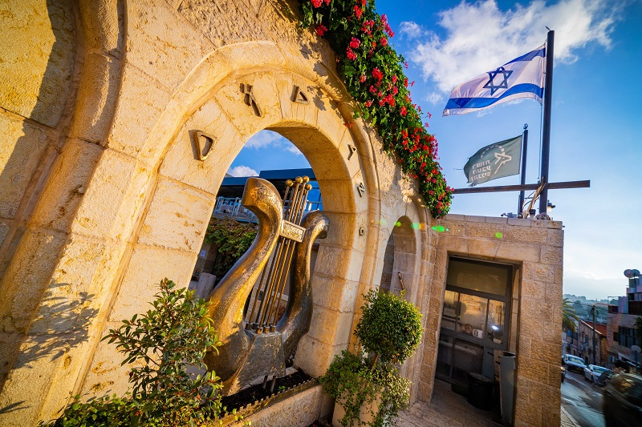

city of david
The City of David, situated on a narrow ridge just south of Jerusalem’s Old City, is considered the birthplace of ancient Jerusalem. Archaeological and biblical accounts link it to King David’s conquest of the Jebusite city around the 10th century BCE, when it became the political and spiritual capital of the united Kingdom of Israel. From this central location, David’s son, King Solomon, is believed to have built the First Temple on the adjacent Temple Mount, solidifying Jerusalem’s role as the heart of the Israelite nation. Beneath its surface lie remnants of earlier Canaanite settlements, dating back to the Middle Bronze Age, including sophisticated fortifications and the Gihon Spring water system, which sustained the city’s earliest inhabitants.

Over the centuries, the City of David remained a focal point through successive periods of destruction, rebuilding, and cultural transformation. During the late First Temple period, monumental structures and administrative buildings reflected its status as a royal and religious center, until its destruction by the Babylonians in 586 BCE. The site was later resettled during the Second Temple period, when expansions shifted the heart of Jerusalem to the western hill, though the ridge retained strategic and symbolic importance. Modern excavations, begun in the 19th century and continuing today, have uncovered a rich archaeological record—from pottery shards and inscriptions to elaborate water tunnels—that vividly illustrate Jerusalem’s ancient history and enduring significance.